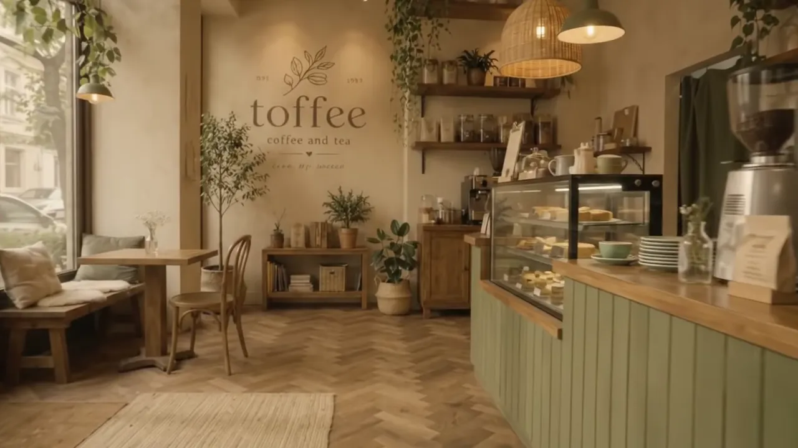

Morning · Café
Light first, then everything else.
A café earns its living before ten. We plan the counter for a queue that moves, the seats for laptops and prams, and the light for pastries that photograph. Daylight does most of the work. We make sure it lands where it should.